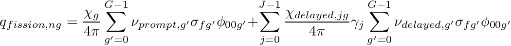

|
Chi-Tech
|
|
Chi-Tech
|
The development process of ChiTech is taylored for a small team of developers and we will strive to keep to this philosophy as far as possible. We aim to provide stable and reliable releases to users whilst simultaneously keeping the development process fluent.
ChiTech releases comprise a packaged archive that represents a reviewed snapshot of the code as determined by the principle developers. Update cycles coincide approximately with U.S. University semesters:
We as a team are commiting to reviewing Pull Requests (PRs) at a 2 week interval. This means that a collaborator should not have to wait more than two weeks for their pull request to be reviewed. This does not apply to changes requested on previous pull requests which themselves will be considered to be a new 2 week process.
The basic development process is shown below:
The development master branch will only be merged from the master branch of contributor forks. We will not merge PRs from feature branches. Contributors should merge feature branches to their respective master branches before issueing pull requests.
Example Pull-Request:
Monday January 9 a contributor makes a complex PR. The last dedicated PR-review committee sitting was Wednesday January 4. The next dedicated sitting is then Wednesday January 18 (2 weeks later) and therefore if the committee does not find time before that date then the contributor will at maximum have to wait till January 18. If the review fails or requests additional changes then the timer is reset and the maximum wait time is again two weeks.
Most likely course of action: Most likely the review committee members will start to individually respond to the PR before the big review sitting. The contributor will see GitHub code conversations for committee members which can be resolved on the go as shown below.
Before any contributer makes a pull request an -regression test-suite must be run. This is a regression test suite that can be run on a number of local machine processes (typically on the contributor's personal machine). On a weekly basis we will execute a high performance  -regression test-suite. This test-suite comprises high process-count tests necessary to ensure that the scalability of core features remain unaffected. If the -regression fails, all pull requests that were merged after the last successful -regression will be reverted and the contributors notified.
-regression test-suite. This test-suite comprises high process-count tests necessary to ensure that the scalability of core features remain unaffected. If the -regression fails, all pull requests that were merged after the last successful -regression will be reverted and the contributors notified.
Our policy on documentation is split into two parts: Code annotation and Technical documentation. It is our mission to create a sustainable modern code for which good quality documentation is essential.
Code contributions need to be annotated appropriately. There is a strong connection to code-styling but over-all contributors must ensure their code is comprehensible to the principal developers and future contributors. We are not going to enforce specific annotation styles but we do enforce that the annotation must be consistent within large portions of code.
Function/methods need to have doxygen documentation at the place of definition. This policy will be strongly enforced for input language (i.e. lua function calls) as this goes into the input reference manual directly.
The fundamental mission on technical documentation is to have contributors provide whitepapers. These are latex-documents that fully explain mathematical derivations and implementations and may include pseudo-code that can be reference to by code.